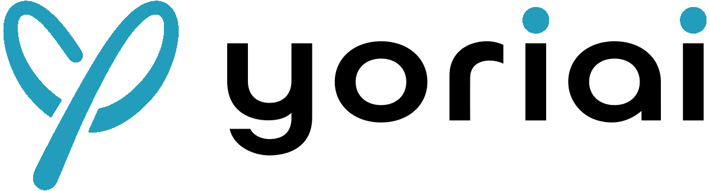
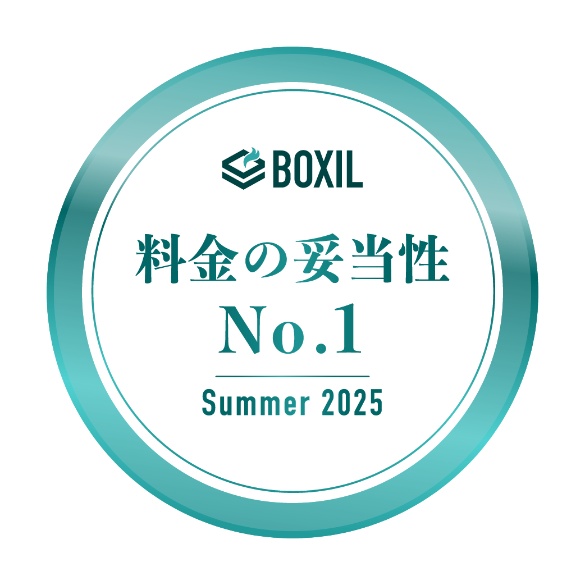

制作会社
検索流入 15倍
株式会社アーツビー
資料DL月額30,000円のSEOツール
SEOに必要なノウハウをすべて仕組み化。
キーワード抽出から記事執筆までお任せ。
※1 確認・転記を含む目安（大きな修正がない場合） ※2 AIライティング1本＝5クレジット消費。画像生成等にも利用可




何を書くか決めるだけで、
午前中が終わる
記事1本を書いて直すだけで、
半日が消える
公開しても、
次のアクションが分からない
良い記事を書きたいのに
手が足りない
yoriaiSEOなら
SEOに必要な工程をすべて自動化。8時間が10分に。
テーマ選定
執筆
画像・内部リンク
校正・事実確認
確認・公開
※3,000〜5,000字の記事を想定した目安
記事は早く書ける。しかし——
記事を書くだけでは、
足りない。
SEOで成果を出すには、
調査・設計・検証・最適化
すべての工程でSEOノウハウが必要
yoriaiSEOなら、SEOに必要な
コア作業が、ほぼ自動。
プロの全工程・ノウハウが入った記事を
1本10分で制作可能
1
2
3
他にもこんな機能が!
AI記事って、上がらないのでは？
記事の半分以上が10位以内に
検索流入／日40→600件
株式会社アーツビー
結局、手直しに時間がかかるのでは？
本数を増やすと、費用も増えるのでは？
30,000円〜／月（税抜）
※画像生成など他機能にもクレジットを使用できます
検索流入 15倍
株式会社アーツビークリック数 1.3倍
高田織物株式会社検索流入 2.1倍
PlusA税理士法人流入 前年比180%
株式会社2JOYクリック数 2.6倍
株式会社Ving購入数 34%増
株式会社チュチュアンナ新規ユーザー 10倍
プラス・ムーブメント検索流入 2.3倍
株式会社コーセイカン